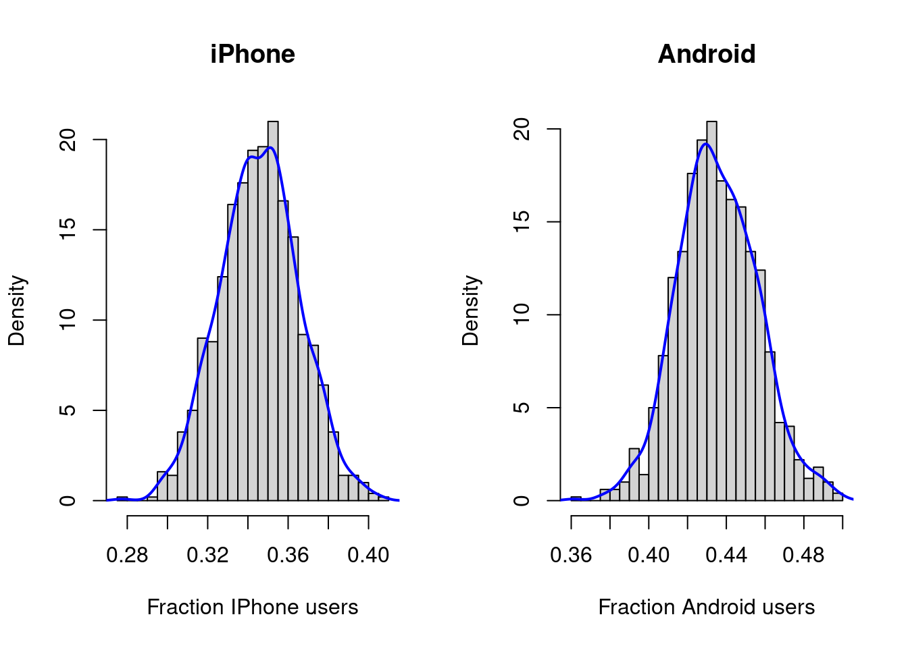

SimDirichlet <- function(nIter, param){
nCat <- length(param)
thetaDraws <- as.data.frame(matrix(NA, nIter, nCat)) # Storage.
for (j in 1:nCat){
thetaDraws[,j] <- rgamma(nIter,param[j],1)
}
for (i in 1:nIter){
thetaDraws[i,] = thetaDraws[i,]/sum(thetaDraws[i,])
}
return(thetaDraws)
}Bayesian analysis of multinomial data
Prepared for the course: Bayesian Learning Author: Mattias Villani, Stockholm and Linköping University, http://mattiasvillani.com
Data
A company has conduct a survey of mobile phone usage. 513 participants were asked the question: ‘What kind of mobile phone do you main use?’ with the four options:
- iPhone
- Android Phone
- Windows Phone
- Other
The responses in the four categories were: 180, 230, 62, 41.
Model
\[ (y_1,\ldots,y_4) \vert \theta_1,\ldots,\theta_4 \sim \mathrm{multinomial}(\theta_1,\ldots,\theta_4) \]
Prior
The conjugate prior for multinomial data is the Dirichlet prior.
\[ (\theta_1,\ldots,\theta_K) \sim \mathrm{Dirichlet}(\alpha_1,\ldots,\alpha_K), \] where the \(\alpha_k\) are positive hyperparameters such that \(\mathbb{E}(\theta_k) = \alpha_k /\sum_{j=1}^K \alpha_j\). Also, the sum of the \(\alpha\)’s, \(\sum_{k=1}^K \alpha_j\), determines the precision (inverse variance) of the Dirichlet distribution. We will determine the prior hyperparameters from data from a similar survey that was conducted four year ago. The proportions in the four categories back then were: 30%, 30%, 20% and 20%. This was a large survey, but since time has passed and user patterns most likely has changed, we value the information in this older survey as being equivalent to a survey with only 50 participants. This gives us the prior: \[ (\theta_1,\ldots,\theta_4) \sim \mathrm{Dirichlet}(\alpha_1 = 15,\alpha_2 = 15,\alpha_3 = 10,\alpha_4=10) \]
note that \(\mathbb{E}(\theta_1) = 15/50 = 0.3\) and so on, so the prior mean is set equal to the proportions from the older survey. Also, \(\sum_{k=1}^4 \alpha_k = 50\), so the prior information is equivalent to a survey based on 50 respondents, as required.
Posterior
\[(\theta_1,\ldots,\theta_K) \vert \mathbf{y} \sim \mathrm{Dirichlet}(\alpha_1 + y_1,\ldots,\alpha_K + y_K)\] We can easily simulate from a Dirichlet distribution since if \(x_k \sim \mathrm{Gamma}(\alpha_k,1)\) for \(k=1,\ldots,K\), then the vector \((z_1,\ldots,z_K)\) where \(z_k = y_k /\sum_{j=1}^K y_k\), can be shown to follow the \(\mathrm{Dirichlet}(\alpha_1,\ldots,\alpha_K)\) distribution. The code below in a (inefficient) implementation of this simulator.
Ok, let’s use this piece of code on the survey data to obtain a sample from the posterior.
# Data and prior
set.seed(123) # Set the seed for reproducibility
y <- c(180,230,62,41) # The cell phone survey data (K=4)
alpha <- c(15,15,10,10) # Dirichlet prior hyperparameters
nIter <- 1000 # Number of posterior draws
thetaDraws <- SimDirichlet(nIter,y + alpha)
names(thetaDraws) <- c('theta1','theta2','theta3','theta4')
head(thetaDraws) theta1 theta2 theta3 theta4
1 0.3530702 0.4539865 0.1079301 0.08501313
2 0.3676441 0.4020532 0.1406601 0.08964270
3 0.3347276 0.4782798 0.1030357 0.08395696
4 0.3395357 0.4487847 0.1217003 0.08997931
5 0.3769253 0.4175829 0.1180137 0.08747814
6 0.3607870 0.4186397 0.1275708 0.09300241So thetaDraws is a nIter-by-4 matrix, where the \(k\)th column holds the posterior draws for \(\theta_k\). We can now approximate the marginal posterior of \(\theta_k\) by a histogram or a a kernel density estimate.
par(mfrow = c(1,2)) # Splits the graphical window in four parts
hist(thetaDraws[,1], breaks = 25, xlab = 'Fraction IPhone users', main ='iPhone', freq = FALSE)
lines(density(thetaDraws[,1]), col = "blue", lwd = 2)
hist(thetaDraws[,2], breaks = 25, xlab = 'Fraction Android users', main ='Android', freq = FALSE)
lines(density(thetaDraws[,2]), col = "blue", lwd = 2)
We can also compute the probability that Android has the largest market share by simply the proportion of posterior draws where Android is largest. You can for example see that this was the case in the first six draws shown above. This code does this calculation.
# Computing the posterior probability that Android is the largest
PrAndroidLargest <- sum(thetaDraws[,2]>apply(thetaDraws[,c(1,3,4)],1,max))/nIter
message(paste('Pr(Android has the largest market share) = ', PrAndroidLargest))Pr(Android has the largest market share) = 0.991